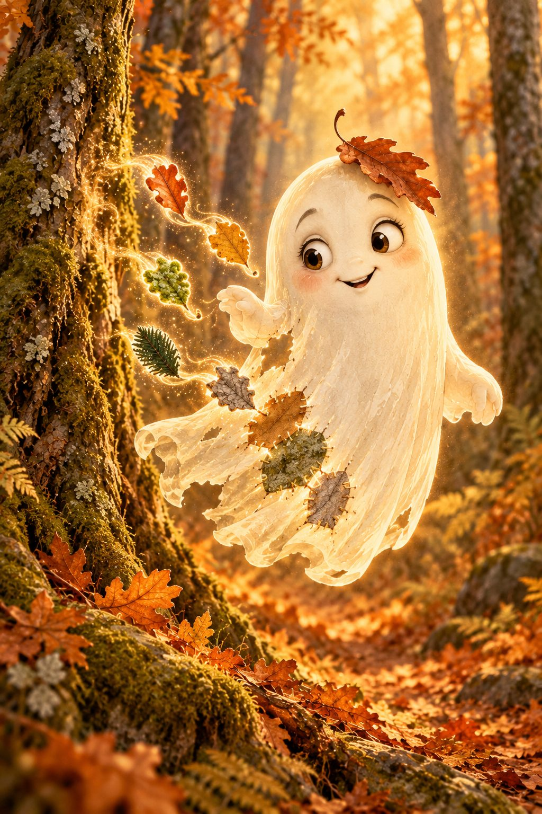

Radar ist aus

Drei Waldfarben
Sucht drei verschiedene Farben im Wald.
Haltet den Kreis auf die Farbe und tippt.
Stimmt die Farbe?
Kein Foto wird gespeichert oder gesendet. Das Bild bleibt auf eurem Handy.
Weiter mit dem nächsten QR Code.